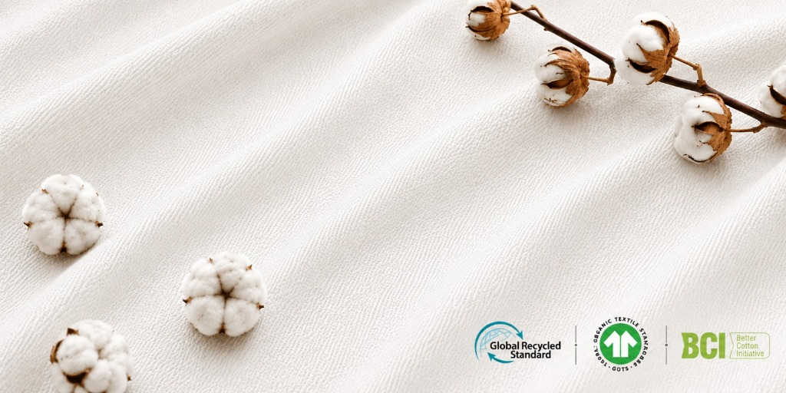
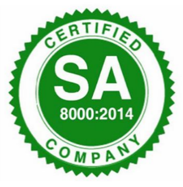
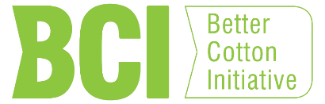
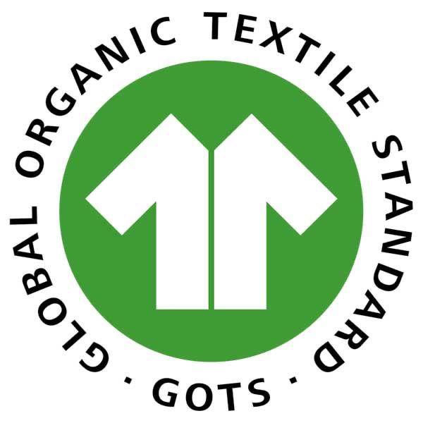
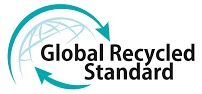
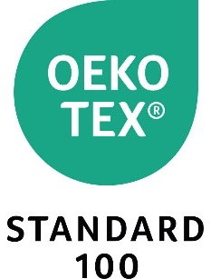

We believe that responsible production is as important as thoughtful design. Our certifications reflect our commitment to ethical practices, sustainable sourcing, and quality standards at every stage of our process.

Ensures fair working conditions, ethical treatment of workers, and safe workplaces throughout our units.
Details →
Promotes sustainable cotton farming practices that reduce environmental impact and support farmers.
Details →
Certifies organic textiles with strict environmental and social criteria across the entire supply chain.
Details →
Verifies the use of recycled materials while ensuring responsible social and environmental practices.
Details →Measures and improves environmental sustainability and social performance across our factories.
Details →
Ensures our finished fabrics are tested and completely free from harmful chemicals, making them skin-safe.
Details →Description about the organic certificate standards will load dynamically.